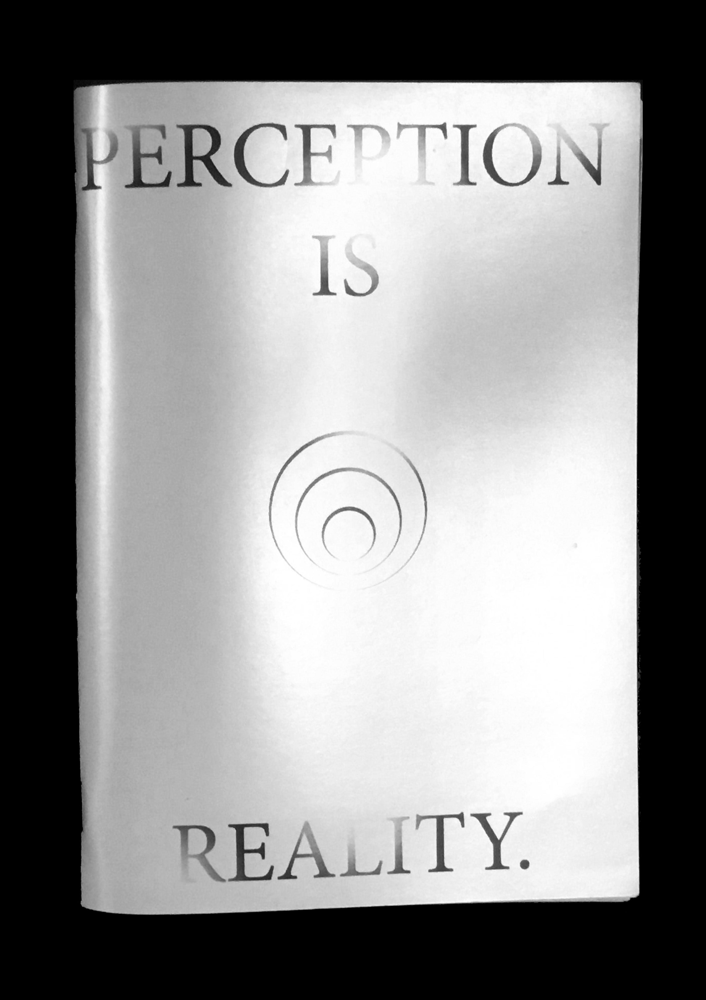
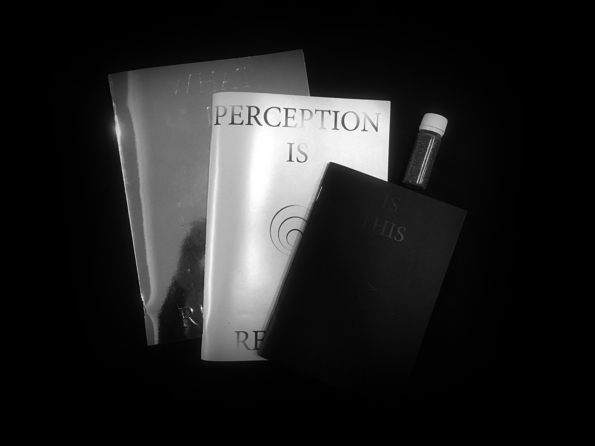
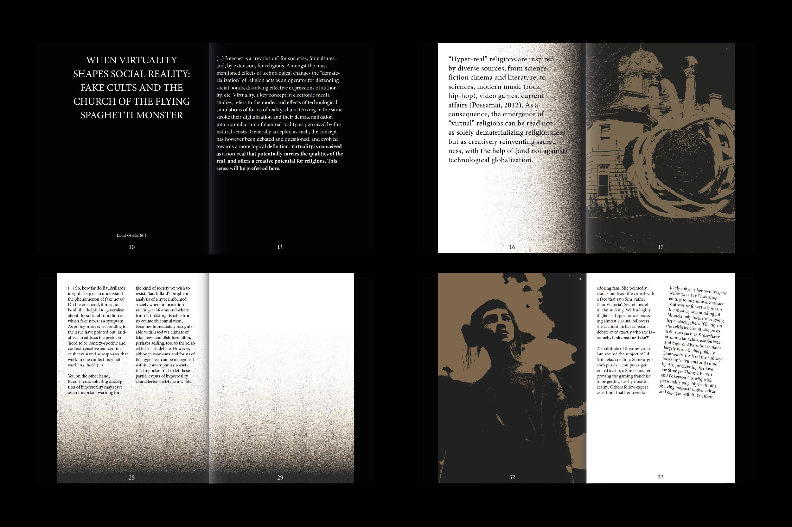
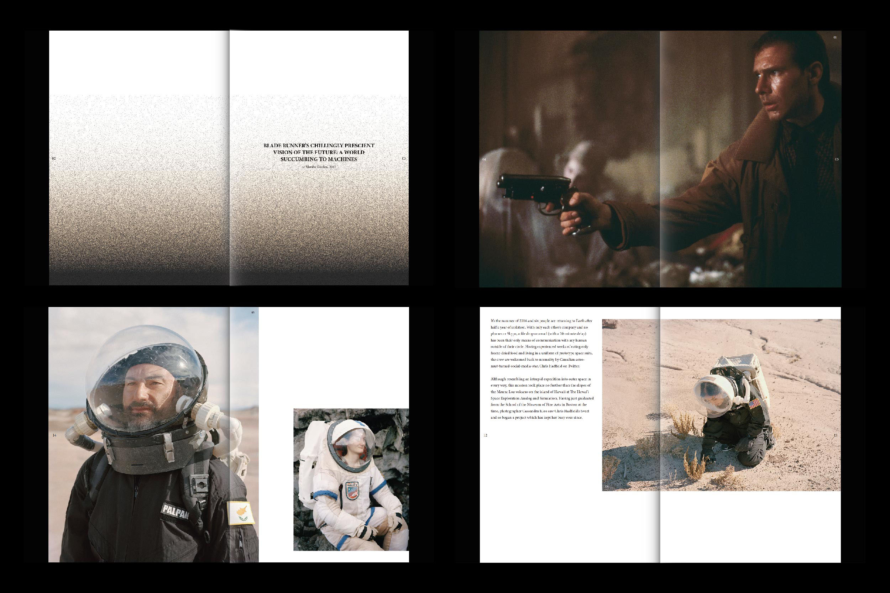
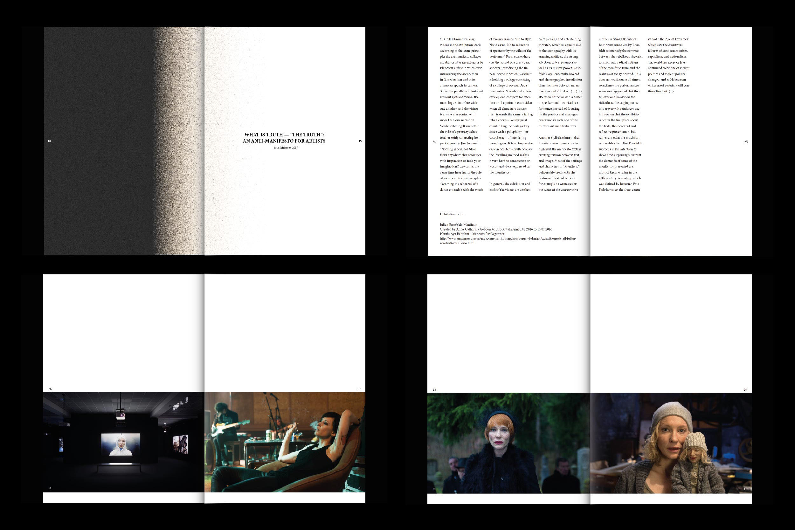

METAVERSE
WHAT IS REALITY?
IS THIS REALITY?
PERCEPTION IS REALITY.
(This is a magazine prototype.)
METAVERSE explores the concept of ̋fake reality ̋ using an approach
that, starting from various topics and universes,opposes
to the present and makes us reflect on this issue.
̋The wonder of the heat is metaphysical. The very colours — pastel, blue, mauve, lilac
— are products of a slow, geological, timeless combustion. (...) The desert is no longer
a landscape, it is a pure form produced by the abstraction of all others ̋
— Jean Baudrillard, America, 1986
This first number intends to decode what reality is and in what way we perceive it.

1/3
—
issue01_perceptionisreality.pkg
issue01_perceptionisreality.pkg is the first issue and explores these perspectives
on reality by introducing content that transports us to the desert
of the real. In our contemporary world, the desert is growing.
The ̋desert of the real ̋ symbolizes the vacuous superficiality of the hyperreality.
Like the desert itself, truth is a space which can never be fully tamed,
navigated and exploited. METAVERSE gathers the vestiges from that desert
giving us clues about what we need to find out about ̋reality ̋.
—
IS THIS REALITY?
—
PERCEPTION IS REALITY.

Communication Design School Project
Collab with
Manuel Silva
Mariana Cordeiro